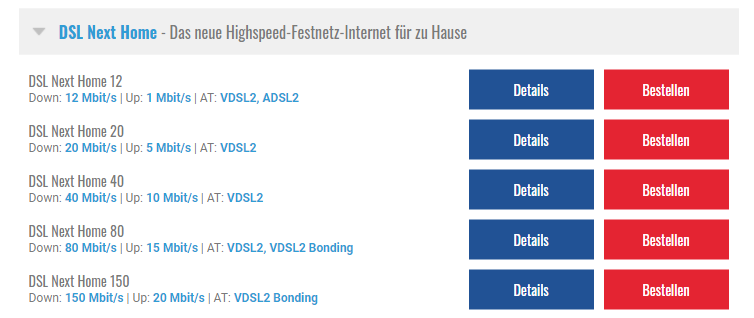
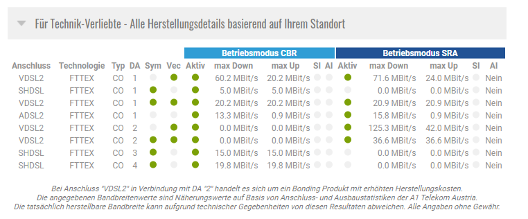

{kind=link}
{kind=link}
Super!
 Beobachte das weiterhin, sollte sich diese ändern speziell bei einem Einbruch der Geschwindigkeit bestätigt sich meine Vermutung.
Beobachte das weiterhin, sollte sich diese ändern speziell bei einem Einbruch der Geschwindigkeit bestätigt sich meine Vermutung.
Würde dann den Router wenn möglich im Haus/Wohnung anders positionieren.
Hallo, ich habe den Mobilen Internet Tarif mit 75 mbit/s down und 15 mbit/s upload. Seit Wochen aber habe ich extrem langsames Internet, sodass ich nicht mal Youtube Videos anschauen kann. Ich habe heute testweise 2 mal den Internet Speed gemessen. Die Ergebnisse sind ja fast schon erbärmlich, da zahlt man für eine Leistung die man zu nicht mal 10% erfüllt bekommt. Ich habe die Wlan Box schon zig mal umgestellt, in andere Stockwerke gestellt, zurückgesetzt und auf anderen Geräten getestet.... Kann sich Magenta nicht endlich eingestehen dass es einfach nicht an den Endkunden liegt, sondern dass man einfach die bezahlte Leistung nicht bereit stellt (bereit stellen kann)? Wenn ich lese dass die langsamen Internet Leistungen einfach daran liegen dass zu viele Leute im Internet sind, wird mir schon wieder schlecht. Dass wäre wie wenn statt einem Railjet auf einmal ein Reisebus die Hunderten Passagiere von Salzburg nach Wien fährt und die ÖBB sagt: Ist halt so, zahlen müssts trotzdem den vollen Preis... Allein dieses Forum ist voll von Nutzern die sich aufregen dass ihr Wlan eine Katastrophe ist. Hab mal nachgerechnet, das Internet dass aktuell bei mir zuhause ankommt würde mich knapp 3 Euro kosten, zahlen tu ich aber 30€... Sowas macht wirklich spaß
Hallo @Josef Schoner
Zur Primetime und jetzt natürlich im Lockdown gibt es leider immer mehr Kunden die mit ihrer Geschwindigkeit im Mobilfunknetz nicht mehr zufrieden sind auch bei dem Mitbewerber häufen sich solche Postings wie deines. Das ganze liegt einfach daran, dass Internet über Mobilfunk ein geteiltes Medium ist. Eventuell lässt sich das ganze aber etwas optimieren.
Was für einen Router verwendest du?
Bist du über WLAN (2,4GHZ/5GHz) oder LAN verbunden?
Befinden sich weitere Geräte in deinem Netzwerk?
Ist bei dir LTE Advanced vorhanden ? Verfügbarkeit checken
Wie ist die Performance außerhalb der Primetime?
vor 1 Stunde schrieb Rexalius2000:Hallo @Josef Schoner
Zur Primetime und jetzt natürlich im Lockdown gibt es leider immer mehr Kunden die mit ihrer Geschwindigkeit im Mobilfunknetz nicht mehr zufrieden sind auch bei dem Mitbewerber häufen sich solche Postings wie deines. Das ganze liegt einfach daran, dass Internet über Mobilfunk ein geteiltes Medium ist. Eventuell lässt sich das ganze aber etwas optimieren.
Was für einen Router verwendest du?
Bist du über WLAN (2,4GHZ/5GHz) oder LAN verbunden?
Befinden sich weitere Geräte in deinem Netzwerk?
Ist bei dir LTE Advanced vorhanden ? Verfügbarkeit checken
Wie ist die Performance außerhalb der Primetime?
Lte advanced ist laut abfrage verfügbar, ob wlan oder lan bleibt sich fast gleich. Router ist der Huawei B535-232 teilweise schaff ich die vollen 75 mbit's 1 minute später nur noch 5 mbit's
Okay danke für die Info. Zeigt er dir der Router im Webinterface unter 192.168.8.1 auch 4G/LTE+ an?
Hast du ein aktuelles Smartphone und die SIM Karte vom Router in diesem bereits eingelegt? Wenn ja, wird die Geschwindigkeit besser?
vor 3 Minuten schrieb Rexalius2000:Okay danke für die Info. Zeigt er dir der Router im Webinterface unter 192.168.8.1 auch 4G/LTE+ an?
Hast du ein aktuelles Smartphone und die SIM Karte vom Router in diesem bereits eingelegt? Wenn ja, wird die Geschwindigkeit besser?
Mir wird nur LTE+ angezeigt, wie gehe ich mit dem Smartphone vor? Sim einlegen und einfach einen speedtest machen?
vor 1 Minute schrieb Josef Schoner:Mir wird nur LTE+ angezeigt, wie gehe ich mit dem Smartphone vor? Sim einlegen und einfach einen speedtest machen?
LTE+ ist mal gut, dein Router bündelt somit 2 LTE Frequenzbänder. Viele neue Smartphones können mehr als nur 2 bündeln, wenn am Smartphone die Geschwindigkeit besser wird könnte man sich überlegen auf einen besseren Router umzusteigen. Genau, SIM aus dem Router entfernen und diese bitte im Smartphone einlegen. Genau Werte erhältst du über die RTR APP
vor 18 Minuten schrieb Rexalius2000:
LTE+ ist mal gut, dein Router bündelt somit 2 LTE Frequenzbänder. Viele neue Smartphones können mehr als nur 2 bündeln, wenn am Smartphone die Geschwindigkeit besser wird könnte man sich überlegen auf einen besseren Router umzusteigen. Genau, SIM aus dem Router entfernen und diese bitte im Smartphone einlegen. Genau Werte erhältst du über die RTR APP
Jetzt habe ich wieder 75 down bzw 15 upload. Kann doch nicht sein dass das stark schwankt, vorallem in der Zeit wo man es am meisten braucht..
Gerade eben schrieb Josef Schoner:vorallem in der Zeit wo man es am meisten braucht..
Derzeit brauchen viele einen Internetverbindung, daher kommt es auch zu solchen massiven Geschwindigkeitseinbrüchen. Was hat die Messung am Smartphone ergeben?
vor 2 Minuten schrieb Rexalius2000:
Derzeit brauchen viele einen Internetverbindung, daher kommt es auch zu solchen massiven Geschwindigkeitseinbrüchen. Was hat die Messung am Smartphone ergeben?
Dadurch dass ich einen 75/15 Vertrag habe und diese aktuell auch erreiche glaube ich liegt es weder am.Router noch am Aufstellungsort oder
Es könnte sein, dass dein Router zwischen 2 Mobilfunkstadionen hin und her wechselt. z.B Stadion A hat eine hohe Auslastung daher der massive Geschwindigekeitseinbruch . Stadion B hat eine geringe Auslastung und die Geschwindigkeit wird dadurch besser. Überprüfen könnte man das über die CELL.ID ebenfalls im Webinterface unter dem Punkt Geräteinformation wo man auch die Empfangswerte abrufen kann,
vor 9 Minuten schrieb Rexalius2000:Es könnte sein, dass dein Router zwischen 2 Mobilfunkstadionen hin und her wechselt. z.B Stadion A hat eine hohe Auslastung daher der massive Geschwindigekeitseinbruch . Stadion B hat eine geringe Auslastung und die Geschwindigkeit wird dadurch besser. Überprüfen könnte man das über die CELL.ID ebenfalls im Webinterface unter dem Punkt Geräteinformation wo man auch die Empfangswerte abrufen kann,
Wo genau finde ich die CELL.ID?
vor 2 Minuten schrieb Josef Schoner:Wo genau finde ich die CELL.ID?
Habs gefunden,
CELL_ID
19718165
Super!
 Beobachte das weiterhin, sollte sich diese ändern speziell bei einem Einbruch der Geschwindigkeit bestätigt sich meine Vermutung.
Beobachte das weiterhin, sollte sich diese ändern speziell bei einem Einbruch der Geschwindigkeit bestätigt sich meine Vermutung.
Würde dann den Router wenn möglich im Haus/Wohnung anders positionieren.
vor 3 Minuten schrieb Rexalius2000:Super!
Beobachte das weiterhin, sollte sich diese ändern speziell bei einem Einbruch der Geschwindigkeit bestätigt sich meine Vermutung.
Würde dann den Router wenn möglich im Haus/Wohnung anders positionieren.
Tausend dank. Melde mich morgen nochmal wenn ich den Tipp mit Smartphone und CELL. ID angewendet habe
Gerne
Gerade eben schrieb Josef Schoner:Tausend dank.
Gerne

Dieser Fall ist in der Tat spannend, denn solche Unterschiede zwischen MAX und ganz unten sind dann doch selten.
Aber gut möglich, dass da wirklich der Router zwischen zwei Sendern springt. In diesem Fall wären auch die anderen Werte wie SINR und RSRP interessant.
Evtl. können wir die auch haben - einmal bei voller Geschwindigkeit und dann bei einem Einbruch.
Findest du ebenfalls im Routermenü.
Danke!
Christian
vor 4 Stunden schrieb Christian_E:Dieser Fall ist in der Tat spannend, denn solche Unterschiede zwischen MAX und ganz unten sind dann doch selten.
Aber gut möglich, dass da wirklich der Router zwischen zwei Sendern springt. In diesem Fall wären auch die anderen Werte wie SINR und RSRP interessant.
Evtl. können wir die auch haben - einmal bei voller Geschwindigkeit und dann bei einem Einbruch.
Findest du ebenfalls im Routermenü.
Danke!
Christian
Hallo, aktuell hab ich 2,5 down und 17 upload... CELL.ID 19718165
SINR 16db
RSRP - 70 dBm
vor 14 Minuten schrieb Josef Schoner:Hallo, aktuell hab ich 2,5 down und 17 upload... CELL.ID 19718165
SINR 16db
RSRP - 70 dBm
Testweise mal die Sim Karte in mein Huawei P20 Lite gesteckt, mehr wie 7 down und 16 upload sind da auch nicht drin. Komisch dass ich bei ALLEN Speedtests bisher immer die vollen 15 mbit's upload gehabt habe, teilweise sogar 18 mbits.. 75 download erreichte ich nur bei cirka jedem 20 test immer so gegen 23 uhr. Am Nachmittag sinkt der download teilweise auf 2 mbits während der upload weiter bei 15 mbits bleibt
vor 7 Minuten schrieb Josef Schoner:Testweise mal die Sim Karte in mein Huawei P20 Lite gesteckt, mehr wie 7 down und 16 upload sind da auch nicht drin. Komisch dass ich bei ALLEN Speedtests bisher immer die vollen 15 mbit's upload gehabt habe, teilweise sogar 18 mbits.. 75 download erreichte ich nur bei cirka jedem 20 test immer so gegen 23 uhr. Am Nachmittag sinkt der download teilweise auf 2 mbits während der upload weiter bei 15 mbits bleibt
Hier noch die ganzen Einträge sowie der Verlauf der Speedtests seit gestern 23 Uhr
vor 36 Minuten schrieb Josef Schoner:Testweise mal die Sim Karte in mein Huawei P20 Lite gesteckt, mehr wie 7 down und 16 upload sind da auch nicht drin. Komisch dass ich bei ALLEN Speedtests bisher immer die vollen 15 mbit's upload gehabt habe, teilweise sogar 18 mbits.. 75 download erreichte ich nur bei cirka jedem 20 test immer so gegen 23 uhr. Am Nachmittag sinkt der download teilweise auf 2 mbits während der upload weiter bei 15 mbits bleibt
Das P20 Lite ist von der Frequenz Bündelung gleichwertig wie dein B535 Route von Huawei. Ein hoher Upload zeigt meistens eine große Auslastung der Zelle. Neue Smartphones/Router können mehr LTE Frequenzen Bündel und erzielen wenn es das Netz kann auch eine bessere Performance. Es gibt auch die Möglichkeit einen Wiederholungsmodus mittels der RTR App durchzuführen somit musst du nicht ständig selber testen. Vielleicht lässt du diesen mal über Nacht laufen wobei heute zu Silvester kein guter Zeitpunkt dafür ist. https://www.netztest.at/de/Loop
hab gerade mit dem technischen support telefoniert. Dieser meinte in meiner Gegend ist eine höhere Auslastung, wodurch jeder Tarif nur prozentuale Leistung zugeschickt bekommt. Ich solle den nächst teureren Tarif wählen dass ich zumindest auf 20 mbits komme, also soll ich 40€ zahlen damit ich ganze 20 mbits bekomme.... habe grad den speedtest mit dem mobilen internet meines handy tarifs versucht (telering) bin im gleichen zimmer wie der Router, bekomme aber 80 mbits/17 mbit/s... Komisch Komisch
Bearbeitet von Josef Schoner
Danke mal.
Deine Empfangswerte sind absolut Top! Da brauchst du nichts mehr zu machen - selten so gute Werte gesehen.
Da ist klar die Auslastung beim Masten schuld.
Allerdings finde ich es schon gewagt, dass man dir einen noch teureren Tarif anbietet, dass du höher kommst.
Ich würde mal sagen, dass du da eher noch abwartest, bis der Lockdown vorbei ist, denn da sehe ich klar ein Problem der Auslastung.
Einzig komisch finde ich, dass manch ein Test rauf schießt bis zum Maximum.
Ist die Cell ID dann anders?
Achja wegen dem Speedtest vom Handy.
Das ist erklärbar... Das Handy erhält mit dem mobilen Tarif eine andere Verwendungsklasse und damit einen deutlich höheren Anteil der Bandbreite.
vor 9 Minuten schrieb Christian_E:Achja wegen dem Speedtest vom Handy.
Das ist erklärbar... Das Handy erhält mit dem mobilen Tarif eine andere Verwendungsklasse und damit einen deutlich höheren Anteil der Bandbreite.
Nicht aber wenn er die SIM vom Router ins Handy einlegt. Bin eigentlich davon ausgegangen, dass er ein besseres Smartphone hat als ein P20 lite das nur CAT6 kann daher mein Vorschlag . Für mich schaut es auch nach einer Überlastung aus. Gegeben falls überprüfen ob ein besserer Router Sinn macht wie z.B die Internet Flex Box MF289D oder auf DSL bzw. Kabel Wechseln wenn verfügbar.
vor 14 Minuten schrieb Christian_E:Achja wegen dem Speedtest vom Handy.
Das ist erklärbar... Das Handy erhält mit dem mobilen Tarif eine andere Verwendungsklasse und damit einen deutlich höheren Anteil der Bandbreite.
Genau den Punkt mit der Verwendungsklasse sprach auch der Techniker am Telefon an. So quasi: Teurerer Taif= höhere Verwendungsklasse und daurch höherer Downloadwert..
Aber zum Punkt Auslastung: Wenn ich um 23:00 75 mbits Download habe müsste rein logisch die Auslastung ja fast perfekt sein für mich. Warum bekomme ich dann um halb 1 in der Nacht nur noch 1/3 der Downloadrate? Ergibt irgendwie keinen Sinn
vor 2 Minuten schrieb Rexalius2000:
Nicht aber wenn er die SIM vom Router ins Handy einlegt. Bin eigentlich davon ausgegangen, dass er ein besseres Smartphone hat als ein P20 lite das nur CAT6 kann daher mein Vorschlag . Für mich schaut es auch nach einer Überlastung aus. Gegeben falls überprüfen ob ein besserer Router Sinn macht wie z.B die Internet Flex Box MF289D oder auf DSL bzw. Kabel Wechseln wenn verfügbar.
Nein, der Speedtest wurde über die Handy Sim durchgeführt, und wie mir der Techniker am Telefon erklärte empfange ich kein Kabelinternet. Habe zwar Festnetzanschlüsse im Haus und auf magenta Verfügbarkeitscheck wird mir angezeigt dass ich Kabel Tarife bis 150mbits verwenden kann. Gleiches bei A1, auch dort wird mir angezeigt dass Verträge bis 150 mbits verfügbar sind
Bearbeitet von Josef Schoner
vor 1 Minute schrieb Josef Schoner:Nein, der Speedtest wurde über die Handy Sim durchgeführt
Okay dann ist es natürlich was anderes, wobei es auch nicht wirklich viel Sinn macht mit der gleichwertigen Hardware.
Hallo, ich habe den Mobilen Internet Tarif mit 75 mbit/s down und 15 mbit/s upload. Seit Wochen aber habe ich extrem langsames Internet, sodass ich nicht mal Youtube Videos anschauen kann. Ich habe heute testweise 2 mal den Internet Speed gemessen. Die Ergebnisse sind ja fast schon erbärmlich, da zahlt man für eine Leistung die man zu nicht mal 10% erfüllt bekommt. Ich habe die Wlan Box schon zig mal umgestellt, in andere Stockwerke gestellt, zurückgesetzt und auf anderen Geräten getestet.... Kann sich Magenta nicht endlich eingestehen dass es einfach nicht an den Endkunden liegt, sondern dass man einfach die bezahlte Leistung nicht bereit stellt (bereit stellen kann)? Wenn ich lese dass die langsamen Internet Leistungen einfach daran liegen dass zu viele Leute im Internet sind, wird mir schon wieder schlecht. Dass wäre wie wenn statt einem Railjet auf einmal ein Reisebus die Hunderten Passagiere von Salzburg nach Wien fährt und die ÖBB sagt: Ist halt so, zahlen müssts trotzdem den vollen Preis... Allein dieses Forum ist voll von Nutzern die sich aufregen dass ihr Wlan eine Katastrophe ist. Hab mal nachgerechnet, das Internet dass aktuell bei mir zuhause ankommt würde mich knapp 3 Euro kosten, zahlen tu ich aber 30€... Sowas macht wirklich spaß
Klar dann ist das die Erklärung beim Handy. Soweit mal klar. Höhere Performance durch andere Klasse.
Aber du hast schon recht - es ist nicht ganz erklärbar, warum du nach Mitternacht wieder solche Einbrüche hast.
Ob da nicht auch beim Masten das Management verrückt spielt.
Man kann immer einen Tarifwechsel andenken aber ganz so einfach machen wir es uns noch nicht.
Welche Verwendungsklasse hast du denn beim aktuellen Tarif?
vor 1 Minute schrieb Christian_E:Klar dann ist das die Erklärung beim Handy. Soweit mal klar. Höhere Performance durch andere Klasse.
Aber du hast schon recht - es ist nicht ganz erklärbar, warum du nach Mitternacht wieder solche Einbrüche hast.
Ob da nicht auch beim Masten das Management verrückt spielt.
Man kann immer einen Tarifwechsel andenken aber ganz so einfach machen wir es uns noch nicht.
Welche Verwendungsklasse hast du denn beim aktuellen Tarif?
wo finde ich die? Und ganz ehrlich 40€ für schätzungsweise 20 mbits die dann ankommen find ich schon wucher. Da kommts billiger wenn ich mir nen Hotspot mit meinen Mobilen Daten am Handy mache
vor 1 Minute schrieb Josef Schoner:wo finde ich die?
Unter den Entgeltbestimmungen für den Tarif .Dieser Tarif hat die Verwendungsgruppe „E“ . Mehr dazu unter: www.magenta.at/bandbreitenoptimierung
vor 1 Minute schrieb Rexalius2000:Unter den Entgeltbestimmungen für den Tarif .Dieser Tarif hat die Verwendungsgruppe „E“ . Mehr dazu unter: www.magenta.at/bandbreitenoptimierung
Dass heißt es gibt blödgesagt 4 tarifgruppen die vorrangig vor mir versorgt werden?
Hmmmm... Also bei "E" teilt man sich die Bandbreite schon ziemlich stark.
Aber ich geb dem Josef recht - den Aufpreis würde ich auch nicht bezahlen, denn da gibts echt andere Alternativen.
DSL geht bei dir gar nicht?
vor 1 Minute schrieb Josef Schoner:Dass heißt es gibt blödgesagt 4 tarifgruppen die vorrangig vor mir versorgt werden?
Ja schaut wohl so aus, dass ganze kommt aber nur bei Tarifen ab 04.06.2020 zur Wirkung.
Gerade eben schrieb Rexalius2000:
Ja schaut wohl so aus, dass ganze kommt aber nur bei Tarifen ab 04.06.2020 zur Wirkung.
Hab den Tarif aber schon länger als 1 Jahr, heißt dass das trifft bei mir garnicht zu?
vor 3 Minuten schrieb Christian_E:Hmmmm... Also bei "E" teilt man sich die Bandbreite schon ziemlich stark.
Aber ich geb dem Josef recht - den Aufpreis würde ich auch nicht bezahlen, denn da gibts echt andere Alternativen.
DSL geht bei dir gar nicht?
DSL weiß ich nicht, ich hab zwar in der Wohnung so nen Anschluss, also der mit den 3 schlitzen aber ob ich da angeschlossen bin oder was auch immer weiß ich nicht. Wir hatten aber früher Festnetz Telefone im Haus falls euch das weiterhilft
Gerade eben schrieb Josef Schoner:Hab den Tarif aber schon länger als 1 Jahr, heißt dass das trifft bei mir garnicht zu?
Was steht in deinen Vertragsunterlagen? Aber wie schon empfohlen wäre es vl. besser auf DSL oder Kabel zu wechseln.
Gerade eben schrieb Rexalius2000:
Was steht in deinen Vertragsunterlagen? Aber wie schon empfohlen wäre es vl. besser auf DSL oder Kabel zu wechseln.
Gibts da auch so einen Verfügbarkeitscheck? Haben zwar den Anhscluss im Haus und haben bis vor cirka 10 Jahren noch über Festnetz telefoniert aber ob der Anschluss immernoch aktuell ist weiß ich nicht
vor 2 Minuten schrieb Josef Schoner:DSL weiß ich nicht, ich hab zwar in der Wohnung so nen Anschluss, also der mit den 3 schlitzen aber ob ich da angeschlossen bin oder was auch immer weiß ich nicht. Wir hatten aber früher Festnetz Telefone im Haus falls euch das weiterhilft
Schaut nach eine Dose von der Telekom(A1) aus wo sich auch Magenta mit Fix Produkten einmieten kann. Checke mal deine Leitung und poste uns bitte die unteren Werte. https://check.kapper.net/vull/index.php
vor 2 Minuten schrieb Josef Schoner:DSL weiß ich nicht, ich hab zwar in der Wohnung so nen Anschluss, also der mit den 3 schlitzen aber ob ich da angeschlossen bin oder was auch immer weiß ich nicht. Wir hatten aber früher Festnetz Telefone im Haus falls euch das weiterhilft
Würde ich auf alle Fälle prüfen. Da gibts oft auch Aktionen, wo die Anschlussgebühr flach fällt.
Ich hab zusätzlich zu LTE auch DSL und bekomm da stabile 37 MBit drüber.
Also ein Versuch ist es auf alle Fälle wert.
vor 1 Minute schrieb Rexalius2000:
Schaut nach eine Dose von der Telekom(A1) aus wo sich auch Magenta mit Fix Produkten einmieten kann. Checke mal deine Leitung und poste uns bitte die unteren Werte. https://check.kapper.net/vull/index.php
Sehe ich absolut genau so.
Mal schauen, was da raus kommt und vielleicht mit deutlich weniger Sorgen

Gerade eben schrieb Christian_E:Ich hab zusätzlich zu LTE auch DSL und bekomm da stabile 37 MBit drüber.
Habe ich auch. Über DSL konstante 20/5 und über mobil naja... Verwende es nur wenn ich länger auswärts bin.
 So, laut diesem Check müsste es gehen. Ist sowas verbindlich oder kann es trotzdem nicht funktionieren?
Bitte den unteren Punkt für Technik-Verliebte - Schaut aber mal ganz gut aus
vor 1 Minute schrieb Rexalius2000:Bitte den unteren Punkt für Technik-Verliebte - Schaut aber mal ganz gut aus

Danke! Bist du noch unter 28 Jahre?
vor 1 Minute schrieb Rexalius2000:Danke! Bist du noch unter 28 Jahre?
Ich ja, der aktuelle Tarif läuft aber noch über meine Eltern
Ihr könntet dann somit Internet Youth Fix 50 (Internet 50 + Digital Telefon) € 26,00 anmelden . Laut Abfrage sollte eine Bandbreite von 50 MBit/s im Download und fast 11 MBit/s kein Problem sein. Dieses Produkt gibt es allerdings nur im Shop bzw. Hotline. Schwankungen der Bandbreite gehören dann der Vergangenheit an. Nähere Infos gibt es auch hier dazu: https://www.magenta.at/content/dam/magenta_at/pdfs/consumer/eb/InternetFix/20200825.pdf
Gerade eben schrieb Rexalius2000:Ihr könntet dann somit Internet Youth Fix 50 (Internet 50 + Digital Telefon) € 26,00 anmelden . Laut Abfrage sollte eine Bandbreite von 50 MBit/s im Download und fast 11 MBit/s kein Problem sein. Dieses Produkt gibt es allerdings nur im Shop bzw. Hotline. Schwankungen der Bandbreite gehören dann der Vergangenheit an. Nähere Infos gibt es auch hier dazu: https://www.magenta.at/content/dam/magenta_at/pdfs/consumer/eb/InternetFix/20200825.pdf
Schnelleres gibts nicht? Das aktuelle Internet wird zu Stoßzeiten von 5 Leuten gleichzeitig benutzt. Darunter 2 Online Gamer und 2 die Netflix schauen. Oder sind mit 50 mbits die Kapazitätsgrenzen unseres Anschlusses erreicht?
Wobei - gerade für das Gamen hast du da deutlich bessere Pings was auch nicht zu verachten ist.
Besser stabile 50 MBit also die Schwankungen, die du jetzt hast.
Man könnte noch die 4D also 4 Draht Technik verwenden, diese wird aber aktuell von Magenta nicht angeboten . Herstellungsentgelde dafür bei einem alternativ Provider 1x 299 € die vom Leitungsinhaber A1 Telekom verrechnet wird . Dafür aber über 100 MBit/s im Download.
vor 1 Minute schrieb Christian_E:Wobei - gerade für das Gamen hast du da deutlich bessere Pings was auch nicht zu verachten ist.
Besser stabile 50 MBit also die Schwankungen, die du jetzt hast.
Schon klar, nur haben wir (also eigentlich ich, als der der alles technische managet) damals den 75 mbits Tarif genommen da netfllix, gaming und evtl auch noch ein Download schon ordentlich Leistung zehren.
vor 2 Minuten schrieb Rexalius2000:Man könnte noch die 4D also 4 Draht Technik verwenden, diese wird aber aktuell von Magenta nicht angeboten . Herstellungsentgelde dafür bei einem alternativ Provider 1x 299 € die vom Leitungsinhaber A1 Telekom verrechnet wird . Dafür aber über 100 MBit/s im Download.
Sschafft das unser Anschluss überhaupt? und die 299 sind dann einmalig oder? und wie wäre da der monatliche Preis?
Solltest du dich für Magenta DSL entscheiden bitte nicht für die Hybrid Variante den diese läuft dann teilweise wieder über LTE und der Ping leidet. Im Großen und ganzen ist ein Wechsel wie von uns empfohlen eine klare Verbesserung . Normalerweise wird auch die Vertragsbindung des bestehenden Anschluss übernommen bzw. der Mobile Zugang deaktiviert.
Hallo, ich habe den Mobilen Internet Tarif mit 75 mbit/s down und 15 mbit/s upload. Seit Wochen aber habe ich extrem langsames Internet, sodass ich nicht mal Youtube Videos anschauen kann. Ich habe heute testweise 2 mal den Internet Speed gemessen. Die Ergebnisse sind ja fast schon erbärmlich, da zahlt man für eine Leistung die man zu nicht mal 10% erfüllt bekommt. Ich habe die Wlan Box schon zig mal umgestellt, in andere Stockwerke gestellt, zurückgesetzt und auf anderen Geräten getestet.... Kann sich Magenta nicht endlich eingestehen dass es einfach nicht an den Endkunden liegt, sondern dass man einfach die bezahlte Leistung nicht bereit stellt (bereit stellen kann)? Wenn ich lese dass die langsamen Internet Leistungen einfach daran liegen dass zu viele Leute im Internet sind, wird mir schon wieder schlecht. Dass wäre wie wenn statt einem Railjet auf einmal ein Reisebus die Hunderten Passagiere von Salzburg nach Wien fährt und die ÖBB sagt: Ist halt so, zahlen müssts trotzdem den vollen Preis... Allein dieses Forum ist voll von Nutzern die sich aufregen dass ihr Wlan eine Katastrophe ist. Hab mal nachgerechnet, das Internet dass aktuell bei mir zuhause ankommt würde mich knapp 3 Euro kosten, zahlen tu ich aber 30€... Sowas macht wirklich spaß
vor 1 Minute schrieb Josef Schoner:Schon klar, nur haben wir (also eigentlich ich, als der der alles technische managet) damals den 75 mbits Tarif genommen da netfllix, gaming und evtl auch noch ein Download schon ordentlich Leistung zehren.
Sschafft das unser Anschluss überhaupt? und die 299 sind dann einmalig oder? und wie wäre da der monatliche Preis?
Laut Abfrage sollte er es schaffen. es müssten allerdings 4 Drähte in der Dose vorhanden sein und wenn nicht wird versucht diese herzustellen. Ja die 299 € sind einmalig zu bezahlen . Die einfachste und günstigste Lösung ist sicher ein Wechsel innerhalb des Magenta Universums . Früher oder später wird das sicher auch von denen angeboten.
vor 1 Minute schrieb Rexalius2000:
Laut Abfrage sollte er es schaffen. es müssten allerdings 4 Drähte in der Dose vorhanden sein und wenn nicht wird versucht diese herzustellen. Ja die 299 € sind einmalig zu bezahlen . Die einfachste und günstigste Lösung ist sicher ein Wechsel innerhalb des Magenta Universums . Früher oder später wird das sicher auch von denen angeboten.
Wo wende ich mich jetzt hin? einfach im online shop einen dsl vertrag bestellen oder wie funktioniert sowas?
Online wird da leider nicht angeboten. Das Angebot gibt es nur über die Hotline bzw. im Magenta Shop. Schildere kurz bei dem Mitarbeiter das Problem und bitte darum das man euch von dem bestehenden Zugang auf Internet Youth Fix 50 (Internet 50 + Digital Telefon) € 26,00 umstellt. Der bestehende Vertrag sollte aber aufgelöst werden nicht das ihr doppelt dann bezahlt. Magenta leidet das dann an A1 weiter und macht mit dir einen Termin zur Herstellung aus. Router/Modem wird die AFAIK von Magenta vorab zugesendet oder der A1 Mitarbeiter nimmt es gleich beim Termin mit.
vor 10 Minuten schrieb Rexalius2000:Online wird da leider nicht angeboten. Das Angebot gibt es nur über die Hotline bzw. im Magenta Shop. Schildere kurz bei dem Mitarbeiter das Problem und bitte darum das man euch von dem bestehenden Zugang auf Internet Youth Fix 50 (Internet 50 + Digital Telefon) € 26,00 umstellt. Der bestehende Vertrag sollte aber aufgelöst werden nicht das ihr doppelt dann bezahlt. Magenta leidet das dann an A1 weiter und macht mit dir einen Termin zur Herstellung aus. Router/Modem wird die AFAIK von Magenta vorab zugesendet oder der A1 Mitarbeiter nimmt es gleich beim Termin mit.
Ok, das ist jetzt aber nicht die 4D Lösung oder? Wieviel würde der im Monat kosten?
Gerade eben schrieb Josef Schoner:Ok, das ist jetzt aber nicht die 4D Lösung oder? Wieviel würde der im Monat kosten?
Nein ist die herkömmliche über 2 Drähte für einen Magenta Zugang. Nähere Informationen zu andren Providern werden hier nicht gepostet, bitte um Verständnis.
vor 4 Minuten schrieb Rexalius2000:
Nein ist die herkömmliche über 2 Drähte für einen Magenta Zugang. Nähere Informationen zu andren Providern werden hier nicht gepostet, bitte um Verständnis.
Ok, theoretisch kann ich ja jeden DSL Tarif nehmen oder? Kannst du mir noch sagen über welche Downloadrate mein Zugang verfügt? Und brauche ich unbedingt einen Techniker oder gelingt sowas alleine auch?
Bearbeitet von Josef Schonervor 2 Minuten schrieb Josef Schoner:Ok, theoretisch kann ich ja jeden DSL Tarif nehmen oder? Kannst du mir noch sagen über welche Downloadrate mein Zugang verfügt
Genau , bitte den DSL Zugang und nicht die Hybrid Lösung. Mit Magenta schafft er laut Abfrage 50 MBit/s im Download und fast 11 MBit/s im Upload.
vor 1 Minute schrieb Rexalius2000:
Genau , bitte den DSL Zugang und nicht die Hybrid Lösung. Mit Magenta schafft er laut Abfrage 50 MBit/s im Download und fast 11 MBit/s im Upload.
Also maximal 50 mbits download, Und Magenta verkauft mir dann so quasi ihr Internet über die Leitungen von A1 oder? muss dafür zwingend ein Techniker kommen oder kann ich das auch alleine anschließen?
Gerade eben schrieb Josef Schoner:Also maximal 50 mbits download, Und Magenta verkauft mir dann so quasi ihr Internet über die Leitungen von A1 oder? muss dafür zwingend ein Techniker kommen oder kann ich das auch alleine anschließen?
Die Leitung muss in der Regel vor Ort überprüft werden, näheres erfährst du dann von Magenta bzw. A1 . Magenta ist im Netz der Telekom Austria eingemietet und bietet ihre Dienste über die bestehende Leitungen an. So ähnlich wie bei Strom oder Gas Anbietern.
vor 1 Minute schrieb Rexalius2000:
Die Leitung muss in der Regel vor Ort überprüft werden, näheres erfährst du dann von Magenta bzw. A1 . Magenta ist im Netz der Telekom Austria eingemietet und bietet ihre Dienste über die bestehende Leitungen an. So ähnlich wie bei Strom oder Gas Anbietern.
Tausend Dank. Wenn jetzt der Mitarbeiter am Telefon auch noch mitspielt hat sich der Aufwand heute fast gelohnt

Ob das heute noch eine gute Idee ist mit dem Anrufen?

Könnte heute bei der Hotline eher wenig Besetzung geben.
Aber schön, dass ihr zu einer möglichen Lösung gekommen seid.
Bitte halt uns am Laufenden.
vor 4 Minuten schrieb Josef Schoner:Tausend Dank.
Gerne, wenn du noch fragen hast zu Magenta melde dich einfach, auch freuen wir uns über ein Feedback ob alle geklappt hat bzw. einen Speed Test mit deiner neuen DSL Leitung. Guten Rutsch und bis bald!

Vielen Dank euch
, ja hoffentlich melde ich mich mit etwas besseren Speedtests

vor 15 Minuten schrieb Rexalius2000:
Genau , bitte den DSL Zugang und nicht die Hybrid Lösung. Mit Magenta schafft er laut Abfrage 50 MBit/s im Download und fast 11 MBit/s im Upload.
Vielleicht noch zusätzlich den Kabel(COAX) Zugang von Magenta checken https://www.magenta.at/verfuegbarkeit/ . Zeigt dieser nur Flex Tarife an ist nur Mobiles und DSL verfügbar.
vor 4 Minuten schrieb Rexalius2000:Vielleicht noch zusätzlich den Kabel(COAX) Zugang von Magenta checken https://www.magenta.at/verfuegbarkeit/ . Zeigt dieser nur Flex Tarife an ist nur Mobiles und DSL verfügbar.
Euphorie ist schon wieder vorbei, der Techniker am Telefon hat mir mitgeteilt dass kein Anschluss an unserer Adresse möglich ist
Aber DSL sollte verfügbar sein laut der Abfrage. Coax wahrscheinlich nicht.
vor 14 Stunden schrieb Josef Schoner:Euphorie ist schon wieder vorbei, der Techniker am Telefon hat mir mitgeteilt dass kein Anschluss an unserer Adresse möglich ist
Die Frage ist - welcher Anschluss ist nicht möglich?
DSL sollte immer gehen, wenn eine Buchse da ist. Im Zweifel muss es eben eingeleitet werden.
Evtl. da auch auf die A1 zugehen und mal die Möglichkeiten hinterfragen.
Ich glaube, es gab an der Hotline wohl leider ein Verständnisproblem. Was ich weiß greifen auch die alternativ Provider, die sich im Netz der A1 Telekom Austria einmieten auch auf ein ähnliches Tool zu wo sie genau sehen ob DSL verfügbar ist und bieten dieses dann auch aktiv an, wenn kein Coax(Kabel) Anschluss verfügbar ist. Laut Abfrage und der Auskunft von Josef ist wohl ein Telefonanschluss von A1 vorhanden daher wird man auch ein Magenta Fix Produkt installieren/freischalten können. Am besten nochmals anrufen und explizit auf das Hinweisen, notfalls einen Magenta Shop besuchen.
Wenn eine DSL Leitung da ist, dann gibt es sicher Möglichkeiten, da hast du recht.
Das Thema ist, welchen Techniker hat man an der Leitung und wie gut kennen sich die aus.
Aber ja bin auch der Meinung - den bleiben.
vor 4 Stunden schrieb Rexalius2000:Ich glaube, es gab an der Hotline wohl leider ein Verständnisproblem. Was ich weiß greifen auch die alternativ Provider, die sich im Netz der A1 Telekom Austria einmieten auch auf ein ähnliches Tool zu wo sie genau sehen ob DSL verfügbar ist und bieten dieses dann auch aktiv an, wenn kein Coax(Kabel) Anschluss verfügbar ist. Laut Abfrage und der Auskunft von Josef ist wohl ein Telefonanschluss von A1 vorhanden daher wird man auch ein Magenta Fix Produkt installieren/freischalten können. Am besten nochmals anrufen und explizit auf das Hinweisen, notfalls einen Magenta Shop besuchen.
vor 29 Minuten schrieb Christian_E:Wenn eine DSL Leitung da ist, dann gibt es sicher Möglichkeiten, da hast du recht.
Das Thema ist, welchen Techniker hat man an der Leitung und wie gut kennen sich die aus.
Aber ja bin auch der Meinung - den bleiben.
A1 hat mir bestätigt dass es einen Anschluss gibt, dieser soll bis zu 73 mbits Download bringen. Haben die Shops morgen geöffnet? Oder sind sie auch im Lockdown?
vor 4 Minuten schrieb Josef Schoner:Haben die Shops morgen geöffnet?
Ja habe sie, aber mit vorübergehenden geänderten Öffnungszeiten. https://www.magenta.at/shopfinder/
73 MBit klingt ja echt gut. Da würde ich mich auch freuen, wenn das bei mir möglich wäre.
Gut dann ist das bei dir eine doch recht interessante Alternative. 😀
Gerade eben schrieb Christian_E:73 MBit klingt ja echt gut. Da würde ich mich auch freuen,
Mir geht es genau so, aber lieber stabile 20 als schwankende 100 MBit/s
vor 3 Minuten schrieb Rexalius2000:
Mir geht es genau so, aber lieber stabile 20 als schwankende 100 MBit/s
vor 5 Minuten schrieb Christian_E:73 MBit klingt ja echt gut. Da würde ich mich auch freuen, wenn das bei mir möglich wäre.
Gut dann ist das bei dir eine doch recht interessante Alternative. 😀
Das klingt tatsächlich sehr vielversprechend. Werde morgen mal bei einem Shop vorbeischauen. Danke nochmal für die zeitintensive Hilfe!!
Wenn du du über 70 MBit kommen möchtest, müsstest du dich für Internet Fix 75 (Internet 75 + Digital Telefon) € 30,00 im Monat entscheiden. Es gibt auch eine Variante mit TV diese aber den Nachteil hat, dass z.B bei einem HD Stream die Bandbreite um gut 8 MBit dann fällt.
Hallo, ich habe den Mobilen Internet Tarif mit 75 mbit/s down und 15 mbit/s upload. Seit Wochen aber habe ich extrem langsames Internet, sodass ich nicht mal Youtube Videos anschauen kann. Ich habe heute testweise 2 mal den Internet Speed gemessen. Die Ergebnisse sind ja fast schon erbärmlich, da zahlt man für eine Leistung die man zu nicht mal 10% erfüllt bekommt. Ich habe die Wlan Box schon zig mal umgestellt, in andere Stockwerke gestellt, zurückgesetzt und auf anderen Geräten getestet.... Kann sich Magenta nicht endlich eingestehen dass es einfach nicht an den Endkunden liegt, sondern dass man einfach die bezahlte Leistung nicht bereit stellt (bereit stellen kann)? Wenn ich lese dass die langsamen Internet Leistungen einfach daran liegen dass zu viele Leute im Internet sind, wird mir schon wieder schlecht. Dass wäre wie wenn statt einem Railjet auf einmal ein Reisebus die Hunderten Passagiere von Salzburg nach Wien fährt und die ÖBB sagt: Ist halt so, zahlen müssts trotzdem den vollen Preis... Allein dieses Forum ist voll von Nutzern die sich aufregen dass ihr Wlan eine Katastrophe ist. Hab mal nachgerechnet, das Internet dass aktuell bei mir zuhause ankommt würde mich knapp 3 Euro kosten, zahlen tu ich aber 30€... Sowas macht wirklich spaß
Halt uns bitte weiter am laufenden. 😀
Stimmt. Meine DSL ist jetzt auch wieder sehr stabil. Kurz hatte ich vor ein paar Tagen aber doch Probleme, die aber auf Seiten der A1 zu suchen waren.
vor 1 Minute schrieb Christian_E:
Stimmt. Meine DSL ist jetzt auch wieder sehr stabil. Kurz hatte ich vor ein paar Tagen aber doch Probleme, die aber auf Seiten der A1 zu suchen waren.
Vielleicht eine Störung? Normalerweise ist DSL sehr stabil und kein Vergleich zu Mobilfunk. Hast du eine FB Box? Wie lange ist deine Leitung zur Vermittlungsstelle?
Die A1 hat gemeint dass es ein Problem beim Einmessen zwischen Endpunkt und Wählamt gegeben hat. Da hatte ich bei DSL sogar kurz 3stellige Pings.
Jetzt wieder Pings zwischen 9 und 12ms. Also alles fein.
Ich hab Kupfer nur mehr knapp 700 Meter, dann ist schon die Lichtwelle. Leider wurde bis zu mir nicht mehr gegraben. Aber wer weiß, kann ja noch kommen.
Zur Erklärung: ich hab LTE über Magenta (privat) und DSL von A1, wegen meinem Home Office. (läuft über die Firma)
Bearbeitet von Christian_Evor 52 Minuten schrieb Rexalius2000:Wenn du du über 70 MBit kommen möchtest, müsstest du dich für Internet Fix 75 (Internet 75 + Digital Telefon) € 30,00 im Monat entscheiden. Es gibt auch eine Variante mit TV diese aber den Nachteil hat, dass z.B bei einem HD Stream die Bandbreite um gut 8 MBit dann fällt.
Ja denn Tarif hab ich schon ins Auge gefasst. Bin gespannt wie viel von den 75 dann tatsächlich ankommt

Laut Abfrage sollten 72 ankommen.
Angenommen ich fahre morgen direkt zum Shop und erklär ihnen meine Lage. Was glaubt ihr wie lange ich auf DSL Internet warten muss? Und kommt bei DSL immer 100% an oder schwankt das auch sehr stark?
Bearbeitet von Josef SchonerKommt darauf an wie schnell die Techniker bei A1 sind bzw. Magenta das an A1 weiterleitet. Normalerweise liegt die Herstellungsdauer zwischen 7-14 Tagen außerhalb von Corona.
vor 2 Minuten schrieb Josef Schoner:Angenommen ich fahre morgen direkt zum Shop und erklär ihnen meine Lage. Was glaubt ihr wie lange ich auf DSL Internet warten muss? Und kommt bei DSL immer 100% an oder schwankt das auch sehr stark?
DSL wenn es mal eingemessen ist, ist definitiv stabil. Da gibt's echt nur wenig Schwankungen.
Ich hab so um die 37 MBit und manchmal geht die Speed auf 35 runter aber das ist echt selten.
vor 1 Minute schrieb Christian_E:DSL wenn es mal eingemessen ist, ist definitiv stabil. Da gibt's echt nur wenig Schwankungen.
Ich hab so um die 37 MBit und manchmal geht die Speed auf 35 runter aber das ist echt selten.
Im Sommer sind immer schlechtere Leitungswerte als im Winter. Aber diese Schwankungen halten sich in Grenzen.
Vielleicht noch als Zusatzinfo Josef , der A1 Techniker ruft mit Unterdrückter Nummer an.

vor 5 Minuten schrieb Rexalius2000:Im Sommer sind immer schlechtere Leitungswerte als im Winter. Aber diese Schwankungen halten sich in Grenzen.
Was ist da der Grund dafür? Schwankungen in Sommer sind mir da nicht aufgefallen.
Es ist die Leitfähigkeit des Metall(Kupfer) diese bei kalten Temperaturen besser ist.
Hmmmm... Ein Temperaturfühler hast aber in der Regel im Sommer einen niedrigen Widerstand.
Warum sollte sich das bei CU anders verhalten? Ausserdem liegen die Leitungen doch relativ tief in der Erde. Spielt das echt eine Rolle?
vor 1 Minute schrieb Christian_E:Hmmmm... Ein Temperaturfühler hast aber in der Regel im Sommer einen niedrigen Widerstand.
Warum sollte sich das bei CU anders verhalten? Ausserdem liegen die Leitungen doch relativ tief in der Erde. Spielt das echt eine Rolle?
Nicht alle, meine endet mit einer 15 Meter langen Freileitung aus dem Jahr 1965

Oha, ja klar bei freileitungen ist das natürlich was anderes. 😆
Bei mir ist alles in der Erde, damit kenne ich Schwankungen im Sommer kaum oder gar nicht.
Da sind dann auch Gewitter bei dir eine Herausforderung mit Spannung. 😉
vor 1 Minute schrieb Christian_E:Da sind dann auch Gewitter bei dir eine Herausforderung mit Spannung. 😉
Ja
 ,vor ein paar Jahren war der Router, das Fax mit Telefon und die Alarmanlange hinüber. Ob er aber in der Freileitung eingeschlagen hat kann ich nicht sagen.
,vor ein paar Jahren war der Router, das Fax mit Telefon und die Alarmanlange hinüber. Ob er aber in der Freileitung eingeschlagen hat kann ich nicht sagen.
Immerhin, heute konnte man mir in der Hotline weiterhelfen. Nach anfänglicher Verwirrung (Kabel ist nicht verfügbar) und 3x auffordern doch einfach Festnetz und nicht Koax zu prüfen hieß es plötzlich Festnetz ist (natürlich) verfügbar...Fix 75 wurde bestellt.
 Nochmals Danke an euch für die Hilfe
,
Nochmals Danke an euch für die Hilfe
,
Hey super!
Das klingt nach einem guten Plan.
D.h. Fix75 um 30/Monat oder?
Jetzt sind wir aber trotzdem neugierig, wie es dir mit dem neuen Produkt geht.
Meld dich doch bitte wieder.
Perfekt! Ist wahrscheinlich nicht so ein alltägliches Produkt an der Serviceline . Berichte bitte weiter .
vor 3 Stunden schrieb Christian_E:Hey super!
Das klingt nach einem guten Plan.D.h. Fix75 um 30/Monat oder?
Jetzt sind wir aber trotzdem neugierig, wie es dir mit dem neuen Produkt geht.
Meld dich doch bitte wieder.
Ja, Fix 75 um 30€, gleich viel wie bisher für Flex 75
Am 1/2/2021 um 13:26 schrieb Christian_E:Hey super!
Das klingt nach einem guten Plan.D.h. Fix75 um 30/Monat oder?
Jetzt sind wir aber trotzdem neugierig, wie es dir mit dem neuen Produkt geht.
Meld dich doch bitte wieder.
Am 1/2/2021 um 13:51 schrieb Rexalius2000:Perfekt! Ist wahrscheinlich nicht so ein alltägliches Produkt an der Serviceline . Berichte bitte weiter .
Heute war es soweit, der Router kam schon vor 1 Woche. Heute kam der A1 Techniker um alles einzustellen. Naja
 Leider bekam er kein Signal, verdacht ist dass irgendwo eine Leitung vom Verteiler ins Haus kaputt ist, oder bei Renovierungsarbeiten durchtrennt wurde da sie zu dem Zeitpunkt niemand mehr brauchte.. Reparatur soll laut Techniker bis zu 1000€ kosten. Werde jetzt wohl gezwungener Maßen wieder auf Sim setzen müssen und ggf warten bis meine Gemeinde mit Glasfaser versorgt wird. Laut Internet soll dies bereits sei 2018 in Planung sein
Leider bekam er kein Signal, verdacht ist dass irgendwo eine Leitung vom Verteiler ins Haus kaputt ist, oder bei Renovierungsarbeiten durchtrennt wurde da sie zu dem Zeitpunkt niemand mehr brauchte.. Reparatur soll laut Techniker bis zu 1000€ kosten. Werde jetzt wohl gezwungener Maßen wieder auf Sim setzen müssen und ggf warten bis meine Gemeinde mit Glasfaser versorgt wird. Laut Internet soll dies bereits sei 2018 in Planung sein
Echt?
Das ist jetzt aber wirklich Pech. Tut mir leid, dass es so blöd gelaufen ist.

Ja aber was sind die Alternativen? Einen mobilen Tarif hast ja schon. Das hat auch nicht so toll geklappt.
vor 2 Minuten schrieb Christian_E:Echt?
Das ist jetzt aber wirklich Pech. Tut mir leid, dass es so blöd gelaufen ist.

Ja aber was sind die Alternativen? Einen mobilen Tarif hast ja schon. Das hat auch nicht so toll geklappt.
Naja, bevor ich jetzt 1000€ für einen Festnetzanschluss zahle warte ich lieber 1-2 jahre bis Glasfaser anschlussbereit ist.... Jetzt im Winter kann A1 sowiso nix machen zwecks Grabungsarbeiten... Werde wohl weiter bei meinem mobilen Tarif bleiben müssen

Ja würde ich auch so machen. Die Möglichkeiten in der Zukunft werden sicher vielfältiger.
Letztendlich spekuliere ich bei mir ja auch mit einem FTH Zugang und dann wäre die Anbindung perfekt. 🤗
Wenn wir noch helfen können, meld sich einfach.
LG Christian
Danke bei mir ist es genauso ich dachte das ist nur bei mir so es regt mich schon so auf. Hab selber den 75mbits/30mbits bekomme leider nur 3-4 Mbits was eindeutig zu wenig ist. Ich hab auch alles versucht mit LTE/3G wechseln bzw. Businessinternet umstellen wie alles beschrieben sowie am Fenster bzw. Himmelsrichtungen ändern hat alles nicht funktioniert... Bin echt sprachlos man zahlt 100% und man bekommt als Gegenleistung 2 % von der Leitung. Leider kennt sich auch keiner aus der Techniker konnte mir auch ned helfen die in Shop haben mir einen Leihgerät gegeben und der hatte eine Downloadgeschwindigkeit von 0.89Mbits was noch schlechter war. Es ist klar das ich ein mobiles Internet für daheim habe, aber am Anfang ging es ja super mit 50-60 Mbits aber seit 2 Monaten bekomme ich einfach die Bambusleitung zur Verfügung.. ich werde demnächst den Vertrag kündigen leider leider hab sehr gehofft beim Magenta aber leider....
Hallo, ich habe den Mobilen Internet Tarif mit 75 mbit/s down und 15 mbit/s upload. Seit Wochen aber habe ich extrem langsames Internet, sodass ich nicht mal Youtube Videos anschauen kann. Ich habe heute testweise 2 mal den Internet Speed gemessen. Die Ergebnisse sind ja fast schon erbärmlich, da zahlt man für eine Leistung die man zu nicht mal 10% erfüllt bekommt. Ich habe die Wlan Box schon zig mal umgestellt, in andere Stockwerke gestellt, zurückgesetzt und auf anderen Geräten getestet.... Kann sich Magenta nicht endlich eingestehen dass es einfach nicht an den Endkunden liegt, sondern dass man einfach die bezahlte Leistung nicht bereit stellt (bereit stellen kann)? Wenn ich lese dass die langsamen Internet Leistungen einfach daran liegen dass zu viele Leute im Internet sind, wird mir schon wieder schlecht. Dass wäre wie wenn statt einem Railjet auf einmal ein Reisebus die Hunderten Passagiere von Salzburg nach Wien fährt und die ÖBB sagt: Ist halt so, zahlen müssts trotzdem den vollen Preis... Allein dieses Forum ist voll von Nutzern die sich aufregen dass ihr Wlan eine Katastrophe ist. Hab mal nachgerechnet, das Internet dass aktuell bei mir zuhause ankommt würde mich knapp 3 Euro kosten, zahlen tu ich aber 30€... Sowas macht wirklich spaß
Kannst du es nicht selbst reparieren?
vor 1 Stunde schrieb Josef Schoner:Naja
So ein SchXXX *Verzeihung*

vor 53 Minuten schrieb Najor:ich werde demnächst den Vertrag kündigen leider leider hab sehr gehofft beim Magenta aber leider....
Vielleicht ist ja bei dir DSL oder Kabel verfügbar?
vor 11 Stunden schrieb Najor:Danke bei mir ist es genauso ich dachte das ist nur bei mir so es regt mich schon so auf. Hab selber den 75mbits/30mbits bekomme leider nur 3-4 Mbits was eindeutig zu wenig ist. Ich hab auch alles versucht mit LTE/3G wechseln bzw. Businessinternet umstellen wie alles beschrieben sowie am Fenster bzw. Himmelsrichtungen ändern hat alles nicht funktioniert... Bin echt sprachlos man zahlt 100% und man bekommt als Gegenleistung 2 % von der Leitung. Leider kennt sich auch keiner aus der Techniker konnte mir auch ned helfen die in Shop haben mir einen Leihgerät gegeben und der hatte eine Downloadgeschwindigkeit von 0.89Mbits was noch schlechter war. Es ist klar das ich ein mobiles Internet für daheim habe, aber am Anfang ging es ja super mit 50-60 Mbits aber seit 2 Monaten bekomme ich einfach die Bambusleitung zur Verfügung.. ich werde demnächst den Vertrag kündigen leider leider hab sehr gehofft beim Magenta aber leider....
Und in der Nacht oder in der Früh auch keine bessere Performance?
Ist die Einschränkung wirklich 24 Stunden die gleiche?
Ja leider hab gedacht es sind ja nur die Stosszeiten,aber hab es in der Nacht zwischen 1-6 Uhr probiert und das in mehreren Tagen..
Und du hast dich schon direkt an den Router mit Kabel angeschlossen?
Dann gibt es noch einen Test - der klingt komisch aber ist wirkungsvoll im Trouble Shooting.
Nimm den Router und fahr mal irgendwo hin. Auf alle Fälle zu einem anderen Masten.
Steck ihn dort wo ein und teste. Wenn dann die Speed deutlich besser ist, solltest du dieses Problem unbedingt bei Magenta melden.
Dann weißt du, dass dein Router funktioniert und es ein Problem beim Masten gibt.
Ich weiß, das ist Aufwand aber dann hast du Gewissheit.
Ich war schon im Shop beim Stmarx ,hab den Mitarbeiter alles geschildert.Er hat das Gerät dort angeschlossen und ich hatte ein starkes Netz mit 50-60Mbits er gab mir ein Leihgerät aber der von Alcatel war sehr schlecht mit 0.86Mbits. Ich hab auch beim Techniker angerufen leider haben die mich nur weitergeleitet und gemeint ich soll es auf 3G/Lte den Netz wechseln, was ich eh schon seit Monaten mache. Ich hab wirklich alles probiert der in Shop meinte ich soll den Techniker anrufen und den Vertrag kündigen, aber das ist ja für mich ja auch keine Lösung. Hab ja davor ja auch Tmobile gehabt nie Probleme gehabt. Hab ja seit über einen halben Jahr den Vertrag abgeschlossen,seit 2 Monaten funktioniert es leider mit 5-6 Mbits. Hab mich sogar per Mail vor einen Monat beschwert aber hab noch keine Rückmeldung bekommen.Laut den Shop Mitarbeit bleibt mir nicht anders übrig den Vertrag zu kündigen...
OK.
Also der Router hatte im Shop die volle Geschwindigkeit aber bei dir daheim keine Performance.
Alles klar - dann ist das ein massives Auslastungsproblem bei deinem Masten.
Dann können wir von hier leider nicht mehr viel machen, denn dann ist auch ein HW Problem bei dir mit dem Router offenbar nicht vorhanden.
Wenn die meinen, du sollst den Vertrag kündigen, kannst du eh nur noch einen Test mit einem anderen Provider machen aber ist natürlich schade, wenn einem im Shop nur noch diese Alternative geboten wird.

Am 1/25/2021 um 20:42 schrieb Rexalius2000:
So ein SchXXX *Verzeihung*

Sooo, wie es scheint hab ich die kaputte Stelle tatsächlich gefunden:) Fragt mich nicht wieso aber wo die Zuleitung ins Haus führt ist das Kabel einfach übererdig durchtrennt
 Blöderweise habe ich aber bereits die Fritzbox zurückgeschickt und der Vertrag ist heute von Magenta storniert worden. Anfang der nächsten Woche wird die kaputte Stelle repariert und dann werde ich wohl nochmal bei Magenta einen Festnetzvertrag anfragen.. Könnte also doch billiger werden als vom A1 Techniker geschätzt. Habe mich heute auch mal bei A1 umgeschaut, dort kostet ein vergleichbarer Vertrag 12€ mehr, und dass obwohl sich Magenta ja bei denen einmietet
Blöderweise habe ich aber bereits die Fritzbox zurückgeschickt und der Vertrag ist heute von Magenta storniert worden. Anfang der nächsten Woche wird die kaputte Stelle repariert und dann werde ich wohl nochmal bei Magenta einen Festnetzvertrag anfragen.. Könnte also doch billiger werden als vom A1 Techniker geschätzt. Habe mich heute auch mal bei A1 umgeschaut, dort kostet ein vergleichbarer Vertrag 12€ mehr, und dass obwohl sich Magenta ja bei denen einmietet
 Ich hoffe jetzt mal dass das Problem mit der Leitung damit behoben ist und Magenta wieder innerhalb von 15 Tagen einen Festnetzvertrag bieten kann. Eine Frage noch: Die Festnetz Aktivierung wäre am Montag, also 1.2, geplant gewesen. Kann ein Vertrag von Mobil auf Festnetz immer nur am 1 des Monats gewechselt werden oder ist das einfach Zufall gewesen? Mit dem aktuellen Internet habe ich keine Lust bis zum 1.3 zu warten
Ich hoffe jetzt mal dass das Problem mit der Leitung damit behoben ist und Magenta wieder innerhalb von 15 Tagen einen Festnetzvertrag bieten kann. Eine Frage noch: Die Festnetz Aktivierung wäre am Montag, also 1.2, geplant gewesen. Kann ein Vertrag von Mobil auf Festnetz immer nur am 1 des Monats gewechselt werden oder ist das einfach Zufall gewesen? Mit dem aktuellen Internet habe ich keine Lust bis zum 1.3 zu warten

Das Wechseln zwischen Mobil und Festnetz ist ein eher aufwendiger Prozess. Diesen macht sich Magenta mit dem 1. Einfacher.
Wie Magenta die Situation jetzt regelt ist eher schwierig vorherzusagen.
Bearbeitet von IT-Freakvor 10 Minuten schrieb IT-Freak:Das Wechseln zwischen Mobil und Festnetz ist ein eher aufwendiger Prozess. Diesen macht sich Magenta mit dem 1. Einfacher.
Wie Magenta die Situation jetzt regelt ist eher schwierig vorherzusagen.
Wie meinst du das?
vor einer Stunde schrieb Josef Schoner:Wie meinst du das?
Ich kenne nicht den genauen Ablauf wie das bei Magenta abläuft, bei einem anderen Anbieter habe ich so neben bei erfahren, dass der Wechsel von Mobil auf Fest sehr aufwendig ist, da ein Mitarbeiter manuell die Verrechnung beim Wechsel machen muss.
Spätestens wenn ein Mitarbeiter bei einem Prozess eingreifen muss, der eigentlich durch automatisiert ist, wird es zeittechnisch aufwendig, sprich für den Anbieter teuer. Deshalb wird ein solcher Wechsel bei dem Anbieter von welchen ich die Info hab, nur in wenigen "Ausnahmefällen" angeboten und gemacht.
Wobei ich keinen Plan habe, wie Magenta das regelt und ob es für Magenta auch so aufwendig ist.
vor 11 Stunden schrieb Josef Schoner:Sooo, wie es scheint hab ich die kaputte Stelle tatsächlich gefunden:) Fragt mich nicht wieso aber wo die Zuleitung ins Haus führt ist das Kabel einfach übererdig durchtrennt
Blöderweise habe ich aber bereits die Fritzbox zurückgeschickt und der Vertrag ist heute von Magenta storniert worden. Anfang der nächsten Woche wird die kaputte Stelle repariert und dann werde ich wohl nochmal bei Magenta einen Festnetzvertrag anfragen.. Könnte also doch billiger werden als vom A1 Techniker geschätzt. Habe mich heute auch mal bei A1 umgeschaut, dort kostet ein vergleichbarer Vertrag 12€ mehr, und dass obwohl sich Magenta ja bei denen einmietet
Ich hoffe jetzt mal dass das Problem mit der Leitung damit behoben ist und Magenta wieder innerhalb von 15 Tagen einen Festnetzvertrag bieten kann. Eine Frage noch: Die Festnetz Aktivierung wäre am Montag, also 1.2, geplant gewesen. Kann ein Vertrag von Mobil auf Festnetz immer nur am 1 des Monats gewechselt werden oder ist das einfach Zufall gewesen? Mit dem aktuellen Internet habe ich keine Lust bis zum 1.3 zu warten
Du hast aber echt auch Pech...
Ist zwar gut, dass due die Leitung gefunden hast aber hoffentlich geht nun auch alles.
Nicht, dass du jetzt wieder alles vorbereitest und dann gibts neue Probleme.
vor 8 Stunden schrieb Christian_E:Du hast aber echt auch Pech...
Ist zwar gut, dass due die Leitung gefunden hast aber hoffentlich geht nun auch alles.
Nicht, dass du jetzt wieder alles vorbereitest und dann gibts neue Probleme.
 Warum den einfachen Weg nehmen, wenns auch schwer geht
Warum den einfachen Weg nehmen, wenns auch schwer geht
vor 17 Stunden schrieb IT-Freak:Ich kenne nicht den genauen Ablauf wie das bei Magenta abläuft, bei einem anderen Anbieter habe ich so neben bei erfahren, dass der Wechsel von Mobil auf Fest sehr aufwendig ist, da ein Mitarbeiter manuell die Verrechnung beim Wechsel machen muss.
Spätestens wenn ein Mitarbeiter bei einem Prozess eingreifen muss, der eigentlich durch automatisiert ist, wird es zeittechnisch aufwendig, sprich für den Anbieter teuer. Deshalb wird ein solcher Wechsel bei dem Anbieter von welchen ich die Info hab, nur in wenigen "Ausnahmefällen" angeboten und gemacht.
Wobei ich keinen Plan habe, wie Magenta das regelt und ob es für Magenta auch so aufwendig ist.
vor 8 Stunden schrieb Christian_E:Du hast aber echt auch Pech...
Ist zwar gut, dass due die Leitung gefunden hast aber hoffentlich geht nun auch alles.
Nicht, dass du jetzt wieder alles vorbereitest und dann gibts neue Probleme.
Hatte grade einen mega sympathischen Herrn vom Magenta Service am Telefon, war für ihn (natürlich) erst sehr schwer zu verstehen was denn nun genau das Problem ist aber nach kurzer Zeit hat er es verstanden
 Also: da ich das Modem bereits zurückgeschickt habe wird mir ein neues mit neuer Kundennummer zugeschickt. also sozusagen ein neuer Vertrag erstellt, dies wird etwa 2 Wochen dauern. Wann der A1 Techniker Zeit hat konnte er mir nicht sagen, sollte sich aber zumindest bis zum Liefertermin des Modems ausgehen. Wenn die Leitung dann auch Problemlos läuft werde ich also spätestens am 1.3 endlich über Kabel surfen
Also: da ich das Modem bereits zurückgeschickt habe wird mir ein neues mit neuer Kundennummer zugeschickt. also sozusagen ein neuer Vertrag erstellt, dies wird etwa 2 Wochen dauern. Wann der A1 Techniker Zeit hat konnte er mir nicht sagen, sollte sich aber zumindest bis zum Liefertermin des Modems ausgehen. Wenn die Leitung dann auch Problemlos läuft werde ich also spätestens am 1.3 endlich über Kabel surfen
 Zusätzlich hat er mich noch darauf hingewiesen dass bei meinem Handyvertrag die Adresse anders angegeben ist als beim Internet wodurch es zu Problemen bei Kombination durch Magenta 1 kommen kann. Nach Änderung der Adresse bekomme ich nun Internet Fix 75 für 27€. Hatte noch nie einen so hilfsbereiten und von sich aus engagierten Mitarbeiter, der dich auf Sachen hinweist die du selbst nie bedacht hättest, an der Service Leitung.
Zusätzlich hat er mich noch darauf hingewiesen dass bei meinem Handyvertrag die Adresse anders angegeben ist als beim Internet wodurch es zu Problemen bei Kombination durch Magenta 1 kommen kann. Nach Änderung der Adresse bekomme ich nun Internet Fix 75 für 27€. Hatte noch nie einen so hilfsbereiten und von sich aus engagierten Mitarbeiter, der dich auf Sachen hinweist die du selbst nie bedacht hättest, an der Service Leitung.

Na wenn das nicht mal eine positive Entwicklung ist.

Das freut mich nun echt für dich. Jetzt wäre dann noch eine Info schön, wenn am Ende alles so funktioniert, wie du es dir vorgestellt hast. 🤗
Sooo. heute wars wieder soweit. Der A1 Techniker stand vor der Tür um einen Festnetzanschluss von Magenta durchzuführen... Was soll ich sagen, nach über 20 Minuten probieren klappte es wieder nicht
 ABER DANN: Der Techniker (so um die 40 vielleicht) meinte er hat noch 1 [***] im Ärmel. Er verschwand zirka 20 Minuten zum Hauptverteiler, kam zurück, und: es ging wieder nicht
ABER DANN: Der Techniker (so um die 40 vielleicht) meinte er hat noch 1 [***] im Ärmel. Er verschwand zirka 20 Minuten zum Hauptverteiler, kam zurück, und: es ging wieder nicht
 Also hatte ich mich schon damit abgefunden kein gutes Internet zu haben. Er gab aber nicht auf und ging zu unserem Hausverteiler, schloss dort irgendwelche Kabel hin und her und dann: Ein Ausschlag an seinem Tablet wo ein Speed Test geöffnet war.
83 MBit's Download, 18er Ping und 15 MBit's Upload.
Dazu meinte er es seien die besten Ergebnisse in meiner Umgebung, er war selbst überrascht dass es doch noch funktionierte und dann gleich so gut. Theoretisch wären wohl um die 90 MBit's Download möglich, wir mit 83 seien aber am nächsten in der Umgebung dran
Also hatte ich mich schon damit abgefunden kein gutes Internet zu haben. Er gab aber nicht auf und ging zu unserem Hausverteiler, schloss dort irgendwelche Kabel hin und her und dann: Ein Ausschlag an seinem Tablet wo ein Speed Test geöffnet war.
83 MBit's Download, 18er Ping und 15 MBit's Upload.
Dazu meinte er es seien die besten Ergebnisse in meiner Umgebung, er war selbst überrascht dass es doch noch funktionierte und dann gleich so gut. Theoretisch wären wohl um die 90 MBit's Download möglich, wir mit 83 seien aber am nächsten in der Umgebung dran
 . Anbei ein Speedtest von heute 20:30,
früher über Mobil
hatte ich zu der Zeit folgende Werte:
2,8 MBit's Download, 78er Ping und 4,5 MBit's Upload
direkt über Lan am Router. der Speedtest im Screenshot stammt von meinem PC 1 Stockwerk über dem Router und 1 Zimmer versetzt das per Devolo Magic 2 Powerline Adapter versorgt wird, vom Router geht ein Lan Kabel direkt in den Powerline Adapter, von dort gehts unsichtbar über die Stromleitung in mein Zimmer, wo ein weiter Adapter eingesteckt ist. Die letzen 3 Meter zum Pc laufen aktuell über WLAN da ich kein so langes Lan Kabel habe. Trotzdem komme ich sogut wie verlustfrei an die von Magenta versprochenen 75down/15upload ran. Ich bin grade so glücklich, und mache alle 5 Minuten einen Speedtets weil ich es ehrlich gesagt nicht glauben kann
. Anbei ein Speedtest von heute 20:30,
früher über Mobil
hatte ich zu der Zeit folgende Werte:
2,8 MBit's Download, 78er Ping und 4,5 MBit's Upload
direkt über Lan am Router. der Speedtest im Screenshot stammt von meinem PC 1 Stockwerk über dem Router und 1 Zimmer versetzt das per Devolo Magic 2 Powerline Adapter versorgt wird, vom Router geht ein Lan Kabel direkt in den Powerline Adapter, von dort gehts unsichtbar über die Stromleitung in mein Zimmer, wo ein weiter Adapter eingesteckt ist. Die letzen 3 Meter zum Pc laufen aktuell über WLAN da ich kein so langes Lan Kabel habe. Trotzdem komme ich sogut wie verlustfrei an die von Magenta versprochenen 75down/15upload ran. Ich bin grade so glücklich, und mache alle 5 Minuten einen Speedtets weil ich es ehrlich gesagt nicht glauben kann
 nach über 2 Monaten täglichen Ärgernissen wegen des Internets läufts nun endlich perfekt.
Danke
an euch für die Hilfe!!!
nach über 2 Monaten täglichen Ärgernissen wegen des Internets läufts nun endlich perfekt.
Danke
an euch für die Hilfe!!!
Find es auch lobenswert von Magenta, vor 12 Tagen habe ich den Festnetzvertrag bestellt, heute erfolgte die Herstellung.
Bearbeitet von Josef SchonerHallo Josef,
Danke für dein Feedback. Mich freut es sehr, dass du jetzt eine stabile DSL Leitung dein eigen nennst. Schön das wir dir weiterhelfen konnten. Viel Spaß mit deinem neuen Magenta Fix Zugang

Tolles Endergebnis und tolles Feedback!
Danke - da hilft man doch gerne und freut sich mit, wenn am Ende alles geklappt hat!
Viel Spaß weiterhin und vielleicht können wir wieder mal helfen!

LG
Christian
{kind=link}
{kind=link}
{kind=link}
{kind=link}